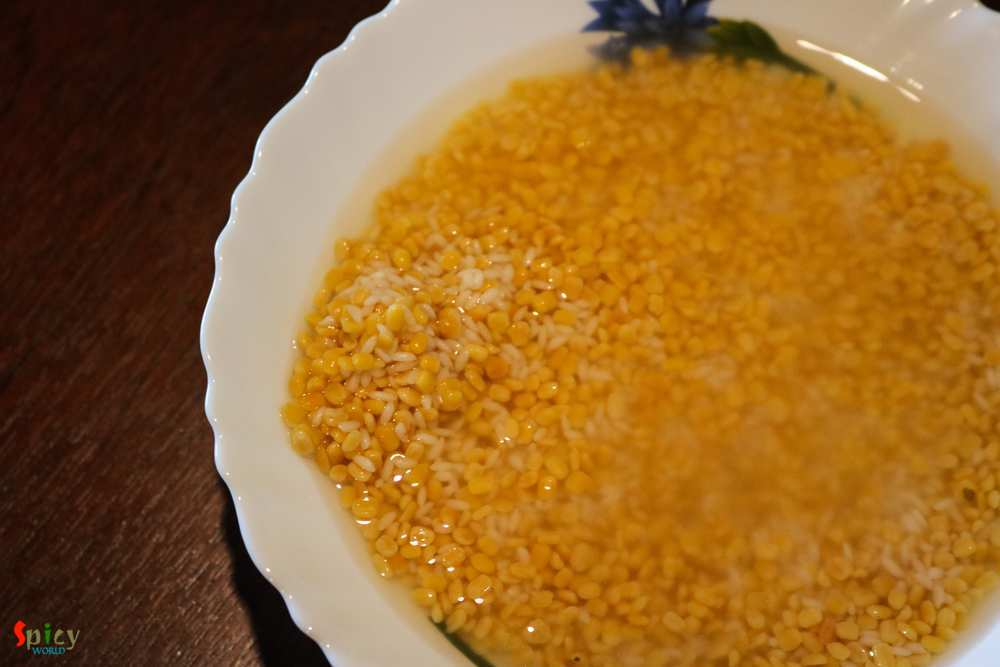
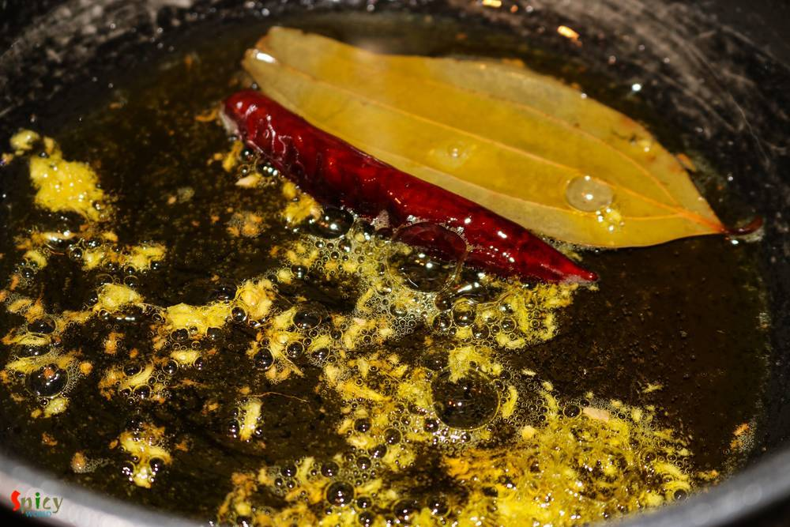
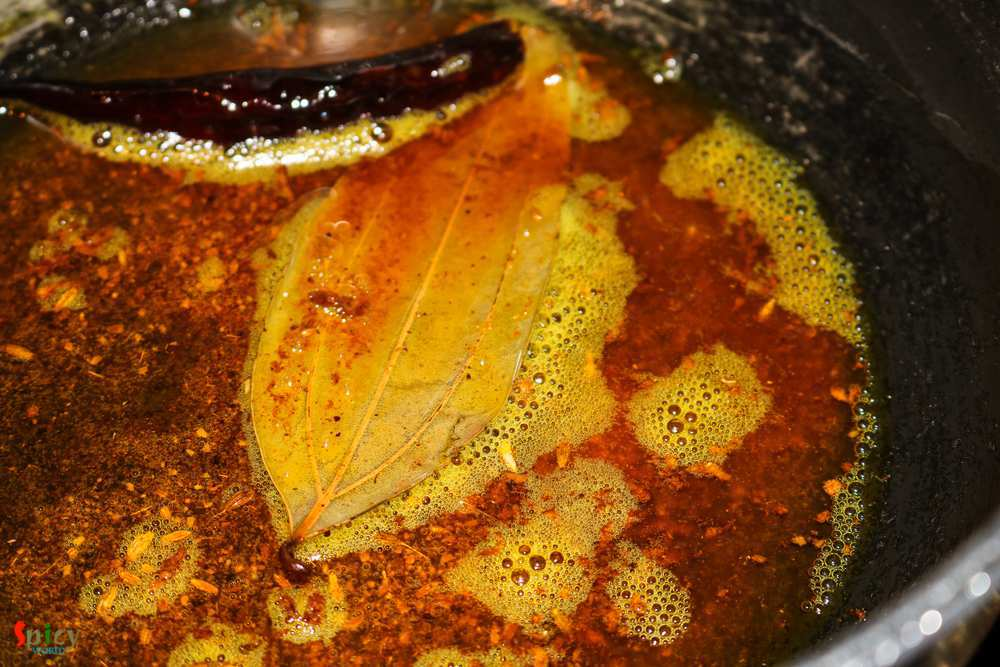
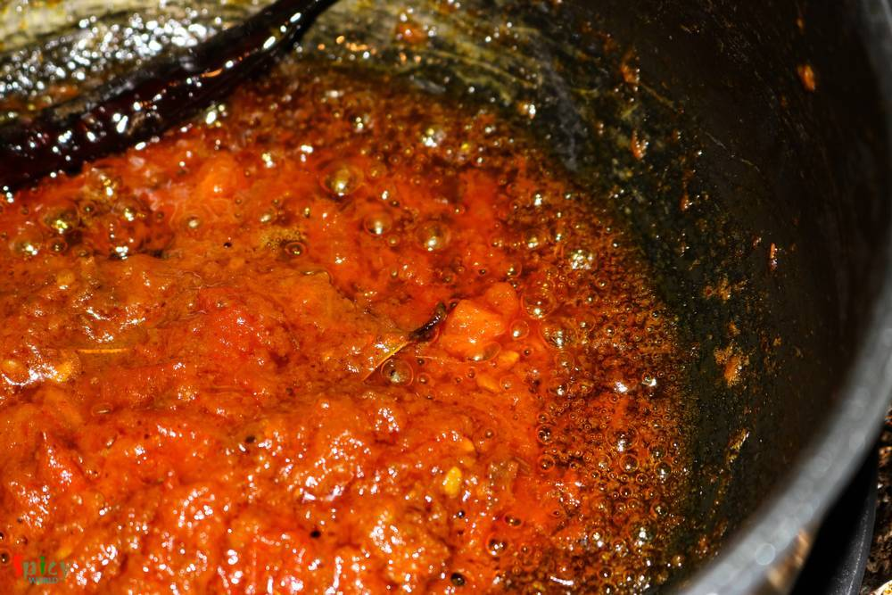
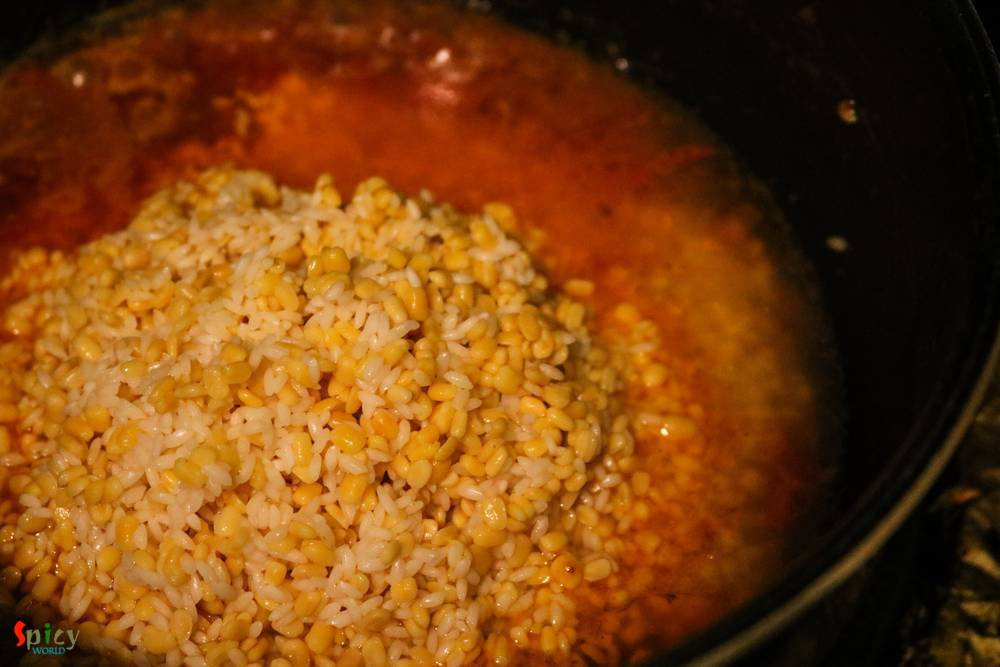
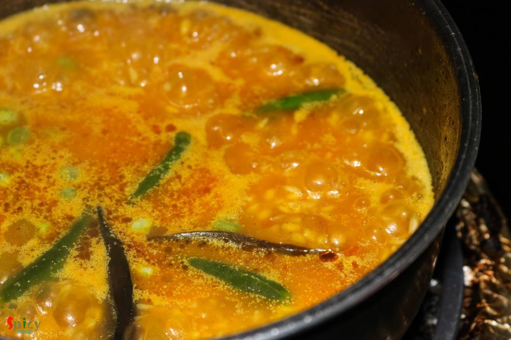
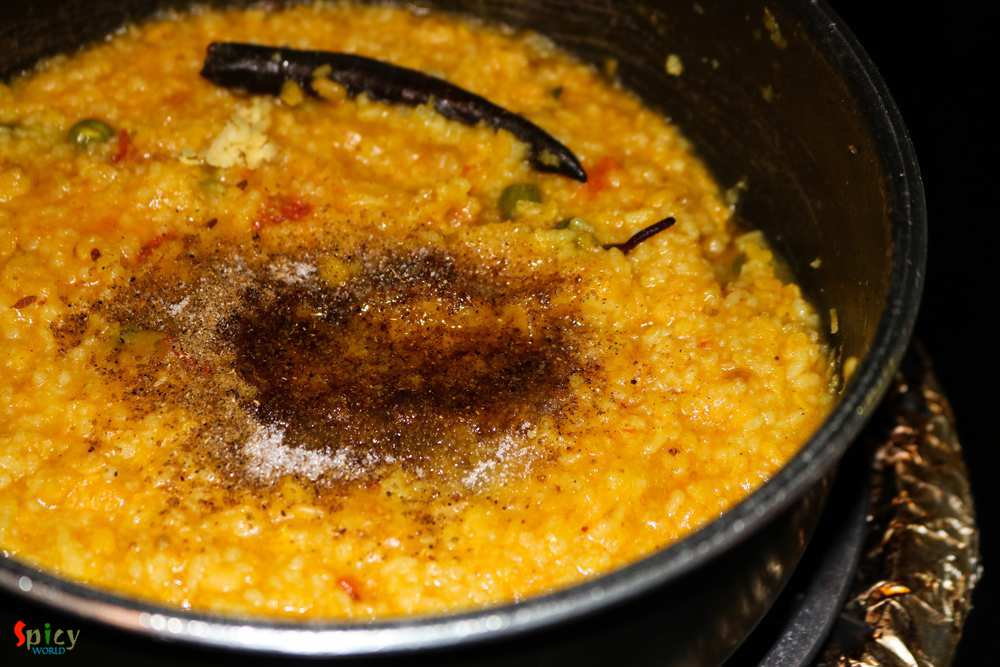

Simple and Easy Recipes
Simple Khichdi / Bhoger Khichuri
© 2016 Spicy World, Published on: Jun 23, 2016
After scorching heat of summer, first few days of monsoon are my favourite. In those days I don't like to stand in front of the gas for long time, because in the meantime you can enjoy the rain by sitting beside the window. I think you guys have already guessed that I am talking about one pot meal - they are so easy to cook. One of the famous one pot meal in Bengal is 'khichuri' / khichdi. I have posted several recipes on khichdi but 'bhoger khichuri' is the basic one. You can make this simple khichdi on 'puja' / vrat days as they are onion and garlic free. Don't expect this dish to be very rich or spicy, but to be very ordinary with full of taste.

Ingredients
- 1/4th cup of gobindovog / kalijeera rice.
- 1/2 cup and 2 Tablespoons of yellow moong daal.
- 1 Teaspoon ginger paste.
- Pinch of asafoetida / hing.
- 1 bay leaf.
- 1 dry red chilli.
- Half Teaspoon of cumin seeds.
- Spice powder (1 Teaspoon of turmeric powder, half Teaspoon of red chilli powder, 1 Teaspoon of roasted cumin and coriander powder).
- Salt and sugar.
- 1 big tomato, chopped.
- 3 green chilies.
- Few green peas.
- 2 Tablespoons of mustard oil.
- A Teaspoon of ghee.
- A Teaspoon of garam masala powder.
- Water.

Steps
Wash the rice and lentils with water very well and then soak them in water for an hour.
Heat mustard oil in a pan.
Add bay leaf, cumin seeds, dry red chilli, asafoetida and ginger paste. Saute for few seconds.
Then add all of the spice powder. Mix for a minute.
Add the chopped tomato and pinch of salt. Cook for 5 minutes.
When the oil starts separating, add the soaked rice and lentils. Mix well.
You can also add some lightly fried vegetables at this stage, if you like.
Then add 2 cups of water, more salt, green chilies and green peas. Mix well, bring the heat to high and let the water come to a boil.
Then cover the pan, bring the heat to low and cook for 20 - 30 minutes.
The texture of this dish will be mushy, so, if you need more water feel free to add.
Lastly add garam masala powder, a big pinch of sugar and a Teaspoon of ghee. Mix well and turn off the heat.
Your bhoger khichuri is ready ...
Enjoy them hot with some pickle and papad ...
")